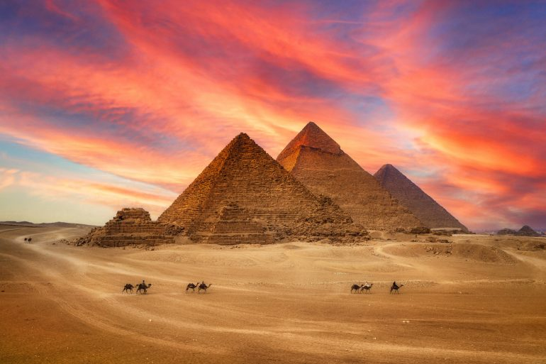
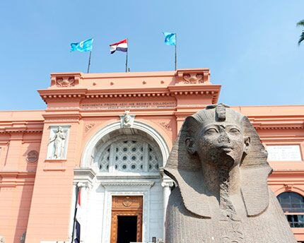
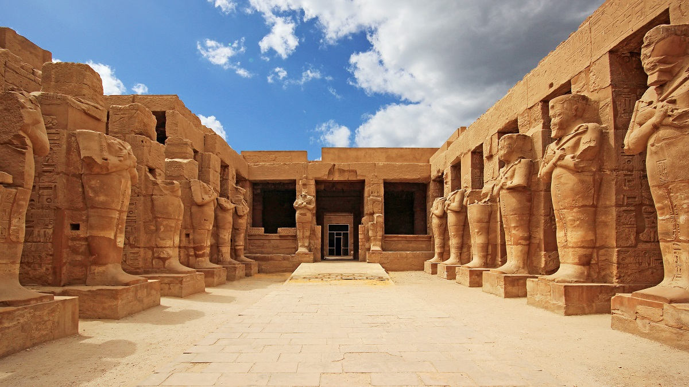

Egipto

¡Descubre Egipto, una tierra de misterio y maravillas antiguas! Situado en el noreste de África y bordeado por el Mar Mediterráneo y el Mar Rojo, Egipto es famoso por su rica historia, cultura fascinante y monumentos icónicos que han resistido el paso del tiempo. Desde las majestuosas pirámides de Giza hasta los tesoros del antiguo Egipto en el Museo Egipcio de El Cairo, este país te sumerge en un viaje a través de los siglos de civilización y legado.
Este complejo arqueológico es uno de los sitios más emblemáticos del mundo antiguo y alberga las famosas pirámides de Keops, Kefrén y Micerinos, así como la Gran Esfinge. Las pirámides son un testimonio impresionante de la grandeza y la ingeniería avanzada de la civilización egipcia.
Situado en El Cairo, este museo alberga una de las colecciones más impresionantes del mundo de artefactos y tesoros del antiguo Egipto. Desde los fascinantes hallazgos de la tumba de Tutankamón hasta estatuas colosales de faraones, el museo ofrece una visión única de la historia y la cultura egipcias.
Ubicados en la ciudad de Luxor, estos templos son monumentos impresionantes dedicados a los dioses egipcios. El Templo de Karnak es uno de los complejos religiosos más grandes del mundo, con columnas gigantescas, obeliscos y estatuas, mientras que el Templo de Luxor es un majestuoso ejemplo de arquitectura egipcia con sus salas hipóstilas y avenidas de esfinges.
- Llegada al Aeropuerto Internacional de El Cairo.
- Traslado al hotel y registro.
- Día libre para descansar del vuelo y explorar los alrededores cercanos al hotel.
- Visita a las Pirámides de Giza, incluyendo las Grandes Pirámides de Keops, Kefrén y Micerinos.
- Exploración de la Gran Esfinge y el Templo del Valle.
- Visita al Museo Egipcio de Antigüedades por la tarde.
- Visita al Templo de Karnak, explorando su vasto complejo de templos, columnatas y obeliscos.
- Visita al Templo de Luxor por la tarde, admirando sus majestuosas columnas y estatuas.
- Regreso a El Cairo en avión por la tarde y noche en El Cairo.
- Excursión de medio día a Memphis, la antigua capital de Egipto, y Saqqara, donde se encuentra la famosa Pirámide Escalonada de Djoser.
- Visita a la Biblioteca de Alejandría y al Fuerte de Qaitbay.
- Almuerzo incluido durante la excursión.
- Desayuno en el hotel.
- Mañana libre para compras de último momento o exploración adicional por cuenta propia.
- Check-out del hotel y traslado al aeropuerto para tu vuelo de regreso a casa o hacia tu próximo destino.
- Traslados: Los traslados pueden costar entre 20 a 50 dólares por trayecto, dependiendo del medio de transporte elegido.
- Hospedaje: Los precios oscilan entre 50 a 150 dólares por noche, según la ubicación y categoría del alojamiento.
- Entradas a sitios turísticos: Las entradas suelen estar entre 10 a 20 dólares por persona.
- Alimentación: Se estima un gasto de 15 a 30 dólares por comida, dependiendo del lugar y el tipo de restaurante.